We’ll analyze global power plants and use Google Earth Engine to build a machine learning model that can see pollution from space. We collect and use features from multiple satellites to accurately detect when a power plant is active.
computer vision
data analysis
code
Author
Devansh Lodha
Published
June 9, 2025
This is based on the tutorial conducted by Alok Talekar (Google Research) at the AI for Social Good, ACM India Summer School 2025
Power plants are the backbone of our modern world, providing the energy that lights up our homes, powers our industries, and connects our communities. But this energy comes at a cost. The environmental impact of power generation, particularly from fossil fuels, is one of the most significant challenges of our time. Understanding this impact is the first step toward a sustainable future.
In this post, we’ll embark on a data-driven journey to explore the world of power generation. We will use two key datasets:
The WRI Global Power Plant Database, a comprehensive, open-source database of power plants around the world.
The U.S. Environmental Protection Agency (EPA) Hourly Emissions Data, which provides detailed information about the emissions of U.S. power plants.
We’ll start by exploring these datasets to get a sense of the global and U.S. energy landscape. We’ll identify which countries are most reliant on coal, pinpoint the cleanest and most polluting coal plants in the U.S., and investigate their operational patterns.
In the second half of our analysis, we’ll bring in a third powerful tool: Google Earth Engine. We will attempt to use satellite imagery to predict a power plant’s emissions and even determine if it’s running or not.
Let’s get started!
Code
import pandas as pdimport numpy as npimport matplotlib.pyplot as pltimport seaborn as snsimport geopandas as gpdimport geodatasetsimport eefrom sklearn.linear_model import LinearRegressionfrom sklearn.linear_model import LogisticRegressionfrom sklearn.metrics import accuracy_score, confusion_matrixfrom sklearn.preprocessing import StandardScalerfrom sklearn.model_selection import train_test_splitfrom sklearn.ensemble import RandomForestRegressorfrom sklearn.metrics import r2_score, mean_absolute_error# Initialize Google Earth Engine# This may require authentication if you haven't used it before.ee.Initialize(project="acm-summer-school-2025")print("Google Earth Engine Initialized Successfully!")# Load the datasets# The Global Power Plant Database from WRIpower_plants_df = pd.read_csv('https://raw.githubusercontent.com/wri/global-power-plant-database/refs/heads/master/output_database/global_power_plant_database.csv')# The EPA hourly emissions data for Q1 2024# Note: The DtypeWarning indicates that some columns have mixed data types.# For our analysis, this is acceptable, but in a production environment, you might want to specify dtypes on load.emissions_df = pd.read_csv('emissions-hourly-2024-q1.csv')print(f"Loaded {len(power_plants_df)} power plants from the global database.")print(f"Loaded {len(emissions_df)} hourly emission records from the EPA dataset.")# Display the first few rows of each dataframe to get a feel for the dataprint("\nGlobal Power Plant Database:")display(power_plants_df.head())print("\nEPA Hourly Emissions Data:")display(emissions_df.head())
Google Earth Engine Initialized Successfully!
/var/folders/lg/tqlb1wcn4nqgxx9bmgfhm3_r0000gn/T/ipykernel_12367/1208587121.py:25: DtypeWarning: Columns (10) have mixed types. Specify dtype option on import or set low_memory=False.
power_plants_df = pd.read_csv('https://raw.githubusercontent.com/wri/global-power-plant-database/refs/heads/master/output_database/global_power_plant_database.csv')
/var/folders/lg/tqlb1wcn4nqgxx9bmgfhm3_r0000gn/T/ipykernel_12367/1208587121.py:30: DtypeWarning: Columns (3,4,11,13,15,17,19,21,23,25,27,28,29,30) have mixed types. Specify dtype option on import or set low_memory=False.
emissions_df = pd.read_csv('emissions-hourly-2024-q1.csv')
Loaded 34936 power plants from the global database.
Loaded 8393112 hourly emission records from the EPA dataset.
Global Power Plant Database:
country
country_long
name
gppd_idnr
capacity_mw
latitude
longitude
primary_fuel
other_fuel1
other_fuel2
...
estimated_generation_gwh_2013
estimated_generation_gwh_2014
estimated_generation_gwh_2015
estimated_generation_gwh_2016
estimated_generation_gwh_2017
estimated_generation_note_2013
estimated_generation_note_2014
estimated_generation_note_2015
estimated_generation_note_2016
estimated_generation_note_2017
0
AFG
Afghanistan
Kajaki Hydroelectric Power Plant Afghanistan
GEODB0040538
33.0
32.322
65.1190
Hydro
NaN
NaN
...
123.77
162.90
97.39
137.76
119.50
HYDRO-V1
HYDRO-V1
HYDRO-V1
HYDRO-V1
HYDRO-V1
1
AFG
Afghanistan
Kandahar DOG
WKS0070144
10.0
31.670
65.7950
Solar
NaN
NaN
...
18.43
17.48
18.25
17.70
18.29
SOLAR-V1-NO-AGE
SOLAR-V1-NO-AGE
SOLAR-V1-NO-AGE
SOLAR-V1-NO-AGE
SOLAR-V1-NO-AGE
2
AFG
Afghanistan
Kandahar JOL
WKS0071196
10.0
31.623
65.7920
Solar
NaN
NaN
...
18.64
17.58
19.10
17.62
18.72
SOLAR-V1-NO-AGE
SOLAR-V1-NO-AGE
SOLAR-V1-NO-AGE
SOLAR-V1-NO-AGE
SOLAR-V1-NO-AGE
3
AFG
Afghanistan
Mahipar Hydroelectric Power Plant Afghanistan
GEODB0040541
66.0
34.556
69.4787
Hydro
NaN
NaN
...
225.06
203.55
146.90
230.18
174.91
HYDRO-V1
HYDRO-V1
HYDRO-V1
HYDRO-V1
HYDRO-V1
4
AFG
Afghanistan
Naghlu Dam Hydroelectric Power Plant Afghanistan
GEODB0040534
100.0
34.641
69.7170
Hydro
NaN
NaN
...
406.16
357.22
270.99
395.38
350.80
HYDRO-V1
HYDRO-V1
HYDRO-V1
HYDRO-V1
HYDRO-V1
5 rows × 36 columns
EPA Hourly Emissions Data:
State
Facility Name
Facility ID
Unit ID
Associated Stacks
Date
Hour
Operating Time
Gross Load (MW)
Steam Load (1000 lb/hr)
...
Heat Input (mmBtu)
Heat Input Measure Indicator
Primary Fuel Type
Secondary Fuel Type
Unit Type
SO2 Controls
NOx Controls
PM Controls
Hg Controls
Program Code
0
AL
Barry
3
1
CS0AAN
2024-01-01
0
0.0
NaN
NaN
...
NaN
NaN
Pipeline Natural Gas
NaN
Tangentially-fired
NaN
Low NOx Burner Technology w/ Closed-coupled OF...
NaN
NaN
ARP, CSNOX, CSOSG2, CSSO2G2
1
AL
Barry
3
1
CS0AAN
2024-01-01
1
0.0
NaN
NaN
...
NaN
NaN
Pipeline Natural Gas
NaN
Tangentially-fired
NaN
Low NOx Burner Technology w/ Closed-coupled OF...
NaN
NaN
ARP, CSNOX, CSOSG2, CSSO2G2
2
AL
Barry
3
1
CS0AAN
2024-01-01
2
0.0
NaN
NaN
...
NaN
NaN
Pipeline Natural Gas
NaN
Tangentially-fired
NaN
Low NOx Burner Technology w/ Closed-coupled OF...
NaN
NaN
ARP, CSNOX, CSOSG2, CSSO2G2
3
AL
Barry
3
1
CS0AAN
2024-01-01
3
0.0
NaN
NaN
...
NaN
NaN
Pipeline Natural Gas
NaN
Tangentially-fired
NaN
Low NOx Burner Technology w/ Closed-coupled OF...
NaN
NaN
ARP, CSNOX, CSOSG2, CSSO2G2
4
AL
Barry
3
1
CS0AAN
2024-01-01
4
0.0
NaN
NaN
...
NaN
NaN
Pipeline Natural Gas
NaN
Tangentially-fired
NaN
Low NOx Burner Technology w/ Closed-coupled OF...
NaN
NaN
ARP, CSNOX, CSOSG2, CSSO2G2
5 rows × 32 columns
A World of Power: The Global Landscape
First, let’s get a global perspective. The WRI database includes the coordinates of each power plant, which allows us to plot them on a world map. We’ll color-code the points by their primary fuel source to see how different energy types are distributed across the globe.
Code
# Create a GeoDataFrame from the power plants datagdf = gpd.GeoDataFrame( power_plants_df, geometry=gpd.points_from_xy(power_plants_df.longitude, power_plants_df.latitude))# Set the coordinate reference system (CRS) to WGS84gdf.set_crs(epsg=4326, inplace=True)# Load a world map for context using the 'naturalearth_land' dataset# This dataset contains polygons for all landmasses.world = gpd.read_file(geodatasets.get_path('naturalearth_land'))# Plottingfig, ax = plt.subplots(figsize=(15, 10))world.plot(ax=ax, color='lightgray', edgecolor='black')# Define a color map for the most common fuel typesfuel_colors = {'Hydro': 'blue','Gas': 'orange','Coal': 'black','Oil': 'purple','Solar': 'gold','Wind': 'green','Nuclear': 'red'}# Plot each fuel type with its corresponding colorfor fuel, color in fuel_colors.items():# Filter for non-NA geometry to avoid errors subset = gdf[(gdf['primary_fuel'] == fuel) & (gdf.geometry.notna())]ifnot subset.empty: subset.plot(ax=ax, marker='o', color=color, markersize=5, label=fuel, alpha=0.7)plt.title('Global Distribution of Power Plants by Primary Fuel Source')plt.xlabel('Longitude')plt.ylabel('Latitude')plt.legend(title='Fuel Type', bbox_to_anchor=(1.05, 1), loc='upper left')plt.grid(True, linestyle='--', alpha=0.6)# Set map limits to avoid distortion from Antarcticaplt.ylim(-60, 90)plt.show()
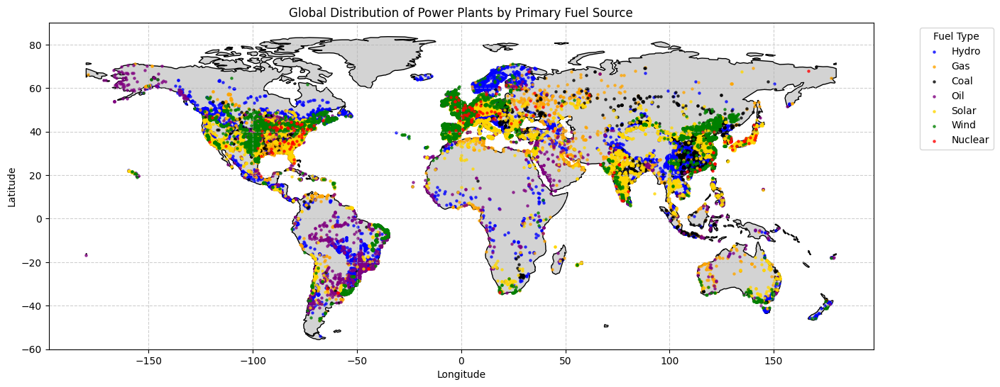
The Reign of Coal: A Global Concern
While the map shows a diverse energy mix, fossil fuels, and particularly coal, have historically dominated. Coal is a major contributor to CO2 emissions, so let’s zoom in on which countries have the largest number of coal-fired power plants.
Code
# Filter for coal power plantscoal_plants = power_plants_df[power_plants_df['primary_fuel'] =='Coal'].copy()# Group by country and count the number of coal power plantscountry_coal_counts = coal_plants['country_long'].value_counts().nlargest(10)# Create the bar plotplt.figure(figsize=(12, 8))sns.barplot(x=country_coal_counts.values, y=country_coal_counts.index, palette='Reds_r')plt.title('Top 10 Countries by Number of Coal Power Plants')plt.xlabel('Number of Coal Power Plants')plt.ylabel('Country')plt.grid(axis='x', linestyle='--', alpha=0.7)# Add annotations to the barsfor index, value inenumerate(country_coal_counts): plt.text(value, index, f' {value}', va='center')plt.show()
/var/folders/lg/tqlb1wcn4nqgxx9bmgfhm3_r0000gn/T/ipykernel_12367/1085953812.py:9: FutureWarning:
Passing `palette` without assigning `hue` is deprecated and will be removed in v0.14.0. Assign the `y` variable to `hue` and set `legend=False` for the same effect.
sns.barplot(x=country_coal_counts.values, y=country_coal_counts.index, palette='Reds_r')
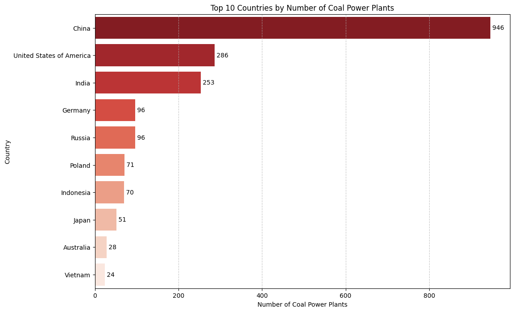
Capacity, Not Just Count: A Better Metric for Impact
While the number of plants is interesting, not all plants are created equal. A more accurate measure of a country’s reliance on coal is its total generation capacity. Let’s re-run our analysis, but this time summing the capacity in megawatts (MW) to see if the ranking changes.
Code
# Group by country and SUM the 'capacity_mw'country_coal_capacity = coal_plants.groupby('country_long')['capacity_mw'].sum().sort_values(ascending=False).nlargest(10)# Create the bar plotplt.figure(figsize=(12, 8))sns.barplot(x=country_coal_capacity.values, y=country_coal_capacity.index, palette='inferno_r')plt.title('Top 10 Countries by Total Coal Power Capacity (MW)')plt.xlabel('Total Capacity (in Gigawatts)')plt.ylabel('Country')plt.grid(axis='x', linestyle='--', alpha=0.7)# Format the x-axis to be in Gigawatts (GW) for readability, since 1 GW = 1000 MWax = plt.gca()ax.xaxis.set_major_formatter(plt.FuncFormatter(lambda x, pos: f'{x/1000:.0f} GW'))# Add annotationsfor index, value inenumerate(country_coal_capacity): plt.text(value, index, f' {value/1000:.1f} GW', va='center')plt.show()
/var/folders/lg/tqlb1wcn4nqgxx9bmgfhm3_r0000gn/T/ipykernel_12367/1079351539.py:6: FutureWarning:
Passing `palette` without assigning `hue` is deprecated and will be removed in v0.14.0. Assign the `y` variable to `hue` and set `legend=False` for the same effect.
sns.barplot(x=country_coal_capacity.values, y=country_coal_capacity.index, palette='inferno_r')
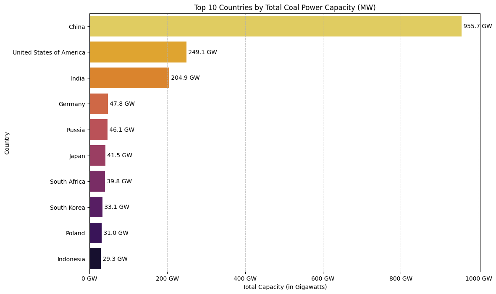
The U.S. Story: Emissions Under the Microscope
The global view shows that the United States has a significant number of coal power plants. To understand their environmental impact, we need more than just their location; we need to look at their emissions. For this, we’ll turn to the detailed hourly emissions data from the U.S. Environmental Protection Agency (EPA).
Our goal is to identify which coal plants are the most and least efficient in terms of CO2 emissions. We’ll define “efficiency” as the amount of CO2 emitted per megawatt (MW) of electricity generated. A lower value means a “cleaner” or more efficient plant. Let’s dig in.
Code
# Filter emissions_df for coal-fired units.# We use str.contains('Coal', na=False) to catch different types like "Bituminous Coal".coal_emissions_df = emissions_df[emissions_df['Primary Fuel Type'].str.contains('Coal', case=False, na=False)].copy()# Clean the data: We need positive power generation to calculate a meaningful emission rate.# Filter out rows where 'Gross Load (MW)' is zero or negative, or where CO2 data is missing.valid_data_mask = (coal_emissions_df['Gross Load (MW)'] >0) & (coal_emissions_df['CO2 Mass (short tons)'].notna())coal_emissions_df_filtered = coal_emissions_df[valid_data_mask].copy()# Calculate CO2 emissions per MW for each hourly record.coal_emissions_df_filtered.loc[:, 'CO2_per_MW'] = coal_emissions_df_filtered['CO2 Mass (short tons)'] / coal_emissions_df_filtered['Gross Load (MW)']# To get a stable measure of performance, we'll average the hourly rates for each facility.facility_co2_performance = coal_emissions_df_filtered.groupby(['Facility Name', 'State'])['CO2_per_MW'].mean().reset_index()# Find the plant with the lowest and highest average CO2 per MW.cleanest_plant = facility_co2_performance.loc[facility_co2_performance['CO2_per_MW'].idxmin()]most_pollutant_plant = facility_co2_performance.loc[facility_co2_performance['CO2_per_MW'].idxmax()]# Print the resultsprint("--- Cleanest vs. Most Pollutant U.S. Coal Plants (Q1 2024) ---")print("\nCleanest Plant (Lowest Average CO2 per MW):")print(f" Facility Name: {cleanest_plant['Facility Name']}")print(f" State: {cleanest_plant['State']}")print(f" Average CO2 Mass per MW: {cleanest_plant['CO2_per_MW']:.4f} short tons")print("\nMost Pollutant Plant (Highest Average CO2 per MW):")print(f" Facility Name: {most_pollutant_plant['Facility Name']}")print(f" State: {most_pollutant_plant['State']}")print(f" Average CO2 Mass per MW: {most_pollutant_plant['CO2_per_MW']:.4f} short tons")
--- Cleanest vs. Most Pollutant U.S. Coal Plants (Q1 2024) ---
Cleanest Plant (Lowest Average CO2 per MW):
Facility Name: Apache Station
State: AZ
Average CO2 Mass per MW: 0.6573 short tons
Most Pollutant Plant (Highest Average CO2 per MW):
Facility Name: Centralia
State: WA
Average CO2 Mass per MW: 11.2822 short tons
Visualizing the Efficiency Spectrum
The numbers show a dramatic difference between the cleanest and most polluting plants. But where do all the other plants fall? A histogram will help us visualize the distribution of CO2 efficiency across all U.S. coal plants in the dataset. This gives us a better sense of whether the top and bottom performers are outliers or representative of broader trends.
Code
plt.figure(figsize=(14, 7))# Plot a histogram of the average CO2 per MW for all facilitiessns.histplot(facility_co2_performance['CO2_per_MW'], bins=50, kde=True, color='skyblue')# Add vertical lines to mark our specific plants of interestplt.axvline(cleanest_plant['CO2_per_MW'], color='green', linestyle='--', linewidth=2, label=f"Cleanest: {cleanest_plant['Facility Name']}")plt.axvline(most_pollutant_plant['CO2_per_MW'], color='red', linestyle='--', linewidth=2, label=f"Most Polluting: {most_pollutant_plant['Facility Name']}")plt.title('Distribution of CO2 Emission Efficiency Across U.S. Coal Plants')plt.xlabel('Average CO2 Mass (short tons) per Gross Load (MW)')plt.ylabel('Number of Facilities')plt.legend()plt.grid(axis='y', linestyle='--', alpha=0.7)plt.show()
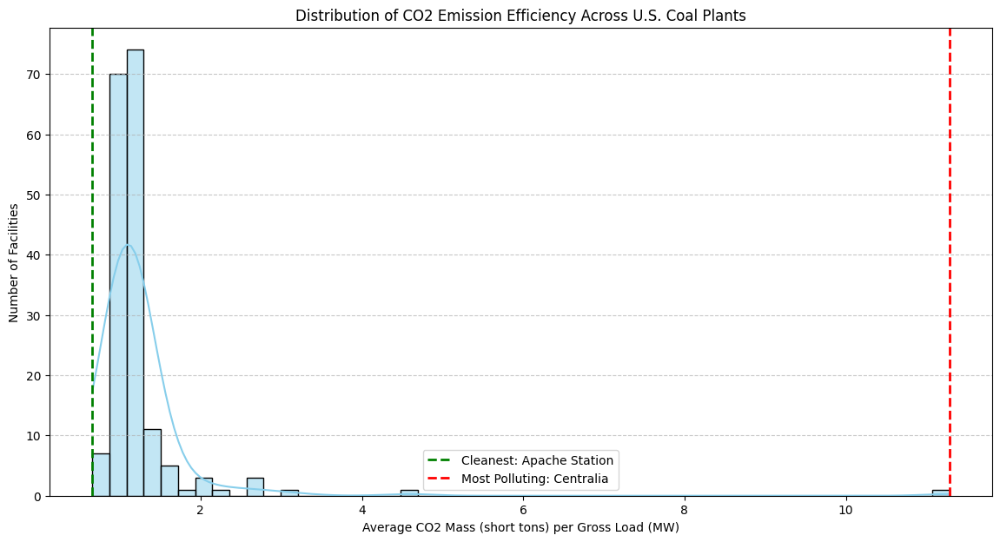
Always On? A Look at Plant Operating Time
A plant’s total impact isn’t just about its emission rate; it’s also about how often it’s running. The EPA dataset includes an “Operating Time” column, which represents the fraction of an hour a unit was active (e.g., a value of 1.0 means it ran for the full hour).
Does this uptime vary by state? Let’s analyze the average operating time for coal plants across the country to see which states run their plants most consistently.
Code
# Calculate the average operating time by statestate_avg_operating_time = coal_emissions_df_filtered.groupby('State')['Operating Time'].mean().sort_values(ascending=False)# Get the top 5 and bottom 5 states for a more focused visualizationtop_5_states = state_avg_operating_time.head(5)bottom_5_states = state_avg_operating_time.tail(5)comparison_df = pd.concat([top_5_states, bottom_5_states])# Create the plotplt.figure(figsize=(12, 8))colors = ['green'] *5+ ['red'] *5sns.barplot(x=comparison_df.values, y=comparison_df.index, palette=colors)plt.title('Average Hourly Operating Time for Coal Plants by State (Q1 2024)')plt.xlabel('Average Operating Time (Fraction of Hour)')plt.ylabel('State')plt.xlim(0.95, 1.005) # Set x-axis limits to emphasize the differencesplt.grid(axis='x', linestyle='--', alpha=0.7)# Add annotationsfor index, value inenumerate(comparison_df): plt.text(value, index, f' {value:.4f}', va='center')plt.axvline(x=state_avg_operating_time.mean(), color='blue', linestyle='--', label=f'National Avg: {state_avg_operating_time.mean():.4f}')plt.legend()plt.show()
/var/folders/lg/tqlb1wcn4nqgxx9bmgfhm3_r0000gn/T/ipykernel_12367/1003638993.py:12: FutureWarning:
Passing `palette` without assigning `hue` is deprecated and will be removed in v0.14.0. Assign the `y` variable to `hue` and set `legend=False` for the same effect.
sns.barplot(x=comparison_df.values, y=comparison_df.index, palette=colors)
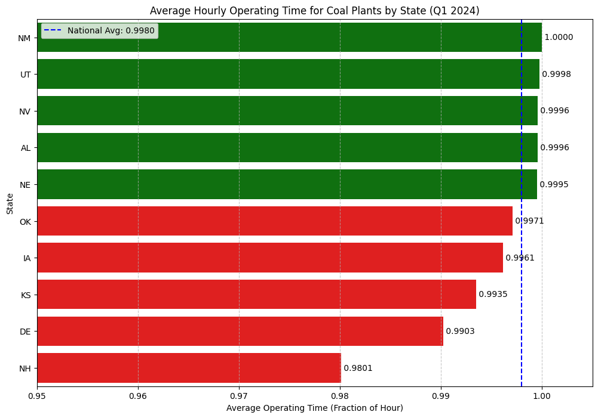
State of Emissions: Who’s on Top?
While uptime gives us a sense of plant activity, the most critical question is about the bottom line: which states produce the most CO2 from coal? Here, we’ll aggregate the total mass of CO2 emissions for each state from the first quarter of 2024.
Code
# Group by state and sum the total CO2 emissionsstate_total_co2 = coal_emissions_df_filtered.groupby('State')['CO2 Mass (short tons)'].sum().sort_values(ascending=False)# Get the top 10 statestop_10_states_co2 = state_total_co2.nlargest(10)# Create the plotplt.figure(figsize=(12, 8))sns.barplot(x=top_10_states_co2.values, y=top_10_states_co2.index, palette='inferno')plt.title('Top 10 States by Total CO2 Emissions from Coal (Q1 2024)')plt.xlabel('Total CO2 Emissions (in million short tons)')plt.ylabel('State')plt.grid(axis='x', linestyle='--', alpha=0.7)# Format the x-axis to be in millions of tons for readabilityax = plt.gca()ax.xaxis.set_major_formatter(plt.FuncFormatter(lambda x, pos: f'{x/1_000_000:.1f}M'))# Add annotationsfor index, value inenumerate(top_10_states_co2): plt.text(value, index, f' {value/1_000_000:.2f}M', va='center')plt.show()
/var/folders/lg/tqlb1wcn4nqgxx9bmgfhm3_r0000gn/T/ipykernel_12367/247695014.py:9: FutureWarning:
Passing `palette` without assigning `hue` is deprecated and will be removed in v0.14.0. Assign the `y` variable to `hue` and set `legend=False` for the same effect.
sns.barplot(x=top_10_states_co2.values, y=top_10_states_co2.index, palette='inferno')
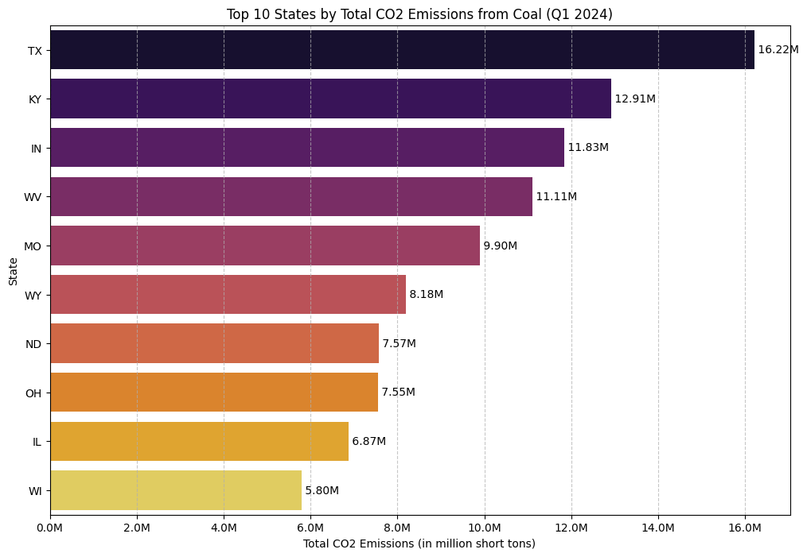
Code
# Data Preparation# Start with the dataframe that is only filtered for coal, not for gross load.# This ensures we keep the "Off" records (where Gross Load is 0 or NaN).base_emissions_for_modeling = emissions_df[emissions_df['Primary Fuel Type'].str.contains('Coal', case=False, na=False)].copy()# Create a clean DataFrame with plant locationsplant_locations = power_plants_df[['name', 'latitude', 'longitude']].drop_duplicates(subset=['name'])# Merge to add coordinateshourly_data_with_coords = pd.merge( base_emissions_for_modeling, plant_locations, left_on='Facility Name', right_on='name', how='inner')# Select our two plants for the modeling exerciseplant_names_to_model = ["Barry", "Gorgas"]base_df = hourly_data_with_coords[hourly_data_with_coords['Facility Name'].isin(plant_names_to_model)].copy()print(f"Found {len(base_df)} hourly records (both on and off) for modeling.")# Google Earth Engine Functiondef get_recent_swir_feature(lat, lon, date_str, window_days=14):try: point = ee.Geometry.Point(lon, lat) end_date = ee.Date(date_str).advance(1, 'day') start_date = end_date.advance(-window_days, 'day') image_collection = (ee.ImageCollection('COPERNICUS/S2_SR_HARMONIZED') .filterBounds(point) .filterDate(start_date, end_date) .filter(ee.Filter.lt('CLOUDY_PIXEL_PERCENTAGE', 20)))if image_collection.size().getInfo() ==0: returnNone best_image = image_collection.sort('CLOUDY_PIXEL_PERCENTAGE').first() roi = point.buffer(500) stats = best_image.select('B11').reduceRegion( reducer=ee.Reducer.mean(), geometry=roi, scale=20 ).get('B11')return stats.getInfo()exceptExceptionas e:returnNone# Feature Calculationunique_plant_days = base_df[['Facility Name', 'Date', 'latitude', 'longitude']].drop_duplicates().copy()print(f"Found {len(unique_plant_days)} unique plant-days to process for satellite features.")from tqdm.auto import tqdmsatellite_features = []for index, row in tqdm(unique_plant_days.iterrows(), total=unique_plant_days.shape[0], desc="Fetching Satellite Features"): feature = get_recent_swir_feature(row['latitude'], row['longitude'], row['Date']) satellite_features.append(feature)unique_plant_days['satellite_feature'] = satellite_features# Merge the features back to create the final modeling dataframemodel_df = pd.merge( base_df, unique_plant_days[['Facility Name', 'Date', 'satellite_feature']], on=['Facility Name', 'Date'], how='left')# Clean the final datasetmodel_df.dropna(subset=['satellite_feature'], inplace=True)print(f"\nCreated final modeling dataset with {len(model_df)} records.")
Found 2184 hourly records (both on and off) for modeling.
Found 91 unique plant-days to process for satellite features.
Model 1: Predicting CO2 Emissions with Linear Regression
Our first challenge is to predict the amount of CO2 being emitted. We’ll build a simple linear regression model where:
Feature (X): The satellite_feature (our SWIR band value).
Target (y): The hourly CO2 Mass (short tons).
For this model, we must filter the data again to only include records where the plant was actually running (Gross Load (MW) > 0), since predicting emissions for an “Off” plant doesn’t make sense.
Code
# For regression, we only use data where the plant is ON and emitting.reg_df = model_df[(model_df['Gross Load (MW)'] >0) & (model_df['CO2 Mass (short tons)'].notna())].copy()print(f"Using {len(reg_df)} records for the regression model (only 'On' states).")# Define features (X) and target (y)X_reg = reg_df[['satellite_feature']]y_reg = reg_df['CO2 Mass (short tons)']# Initialize and train the modelregression_model = LinearRegression()regression_model.fit(X_reg, y_reg)# Print the model's coefficientprint(f"Model Coefficient: {regression_model.coef_[0]:.4f}")print("A negative coefficient suggests that a lower SWIR value correlates with higher CO2 emissions.")# Visualize the relationshipplt.figure(figsize=(12, 7))sns.regplot(x='satellite_feature', y='CO2 Mass (short tons)', data=reg_df, scatter_kws={'alpha':0.2, 's':20}, line_kws={'color':'red', 'linewidth':2})plt.title('Satellite SWIR Feature vs. Hourly CO2 Emissions (for "On" Plants)')plt.xlabel('Average SWIR (Band 11) Value')plt.ylabel('CO2 Mass (short tons)')plt.grid(True, linestyle='--', alpha=0.6)plt.show()
Using 91 records for the regression model (only 'On' states).
Model Coefficient: -0.0205
A negative coefficient suggests that a lower SWIR value correlates with higher CO2 emissions.
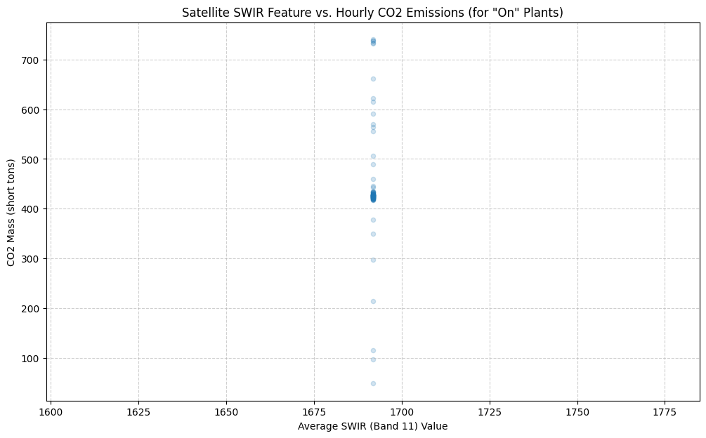
Model 2: Predicting On/Off Status with Logistic Regression
Now for our classification task. We will use the full model_df dataset, which contains both “On” and “Off” states.
Feature (X): The satellite_feature.
Target (y): A new on_off_status column. If Operating Time > 0, the plant is “On” (1). Otherwise, it’s “Off” (0).
Let’s see how well a Logistic Regression model can distinguish between these two states.
Code
from sklearn.linear_model import LogisticRegressionfrom sklearn.metrics import accuracy_score, confusion_matrix# Prepare the data for classification using the full model_dfclf_df = model_df.copy()clf_df['on_off_status'] = (clf_df['Operating Time'] >0).astype(int)# Check the class distribution to confirm we have both classesprint("Class distribution for the classification model:")print(clf_df['on_off_status'].value_counts())# Define features (X) and target (y)X_clf = clf_df[['satellite_feature']]y_clf = clf_df['on_off_status']# Initialize and train the logistic regression modelclassification_model = LogisticRegression()classification_model.fit(X_clf, y_clf)# Make predictionspredictions = classification_model.predict(X_clf)accuracy = accuracy_score(y_clf, predictions)print(f"\nClassification Model Accuracy: {accuracy:.2%}")# Use a confusion matrix to see what we got right and what we got wrong.cm = confusion_matrix(y_clf, predictions)plt.figure(figsize=(8, 6))sns.heatmap(cm, annot=True, fmt='d', cmap='Blues', xticklabels=['Predicted Off', 'Predicted On'], yticklabels=['Actual Off', 'Actual On'])plt.title('Confusion Matrix: On/Off State Prediction')plt.ylabel('Actual Status')plt.xlabel('Predicted Status')plt.show()
Class distribution for the classification model:
on_off_status
0 244
1 92
Name: count, dtype: int64
Classification Model Accuracy: 72.62%
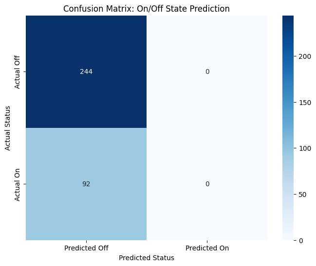
Reality Check: Accuracy Isn’t Enough
Our first attempt at modeling gave us a fascinating and very real-world result. The regression model struggled to find a pattern, and the classification model, despite a promising 72.6% accuracy, was cheating! The confusion matrix revealed that the model had simply learned to always predict “Off,” the most common state in our dataset. It wasn’t using the satellite data to make an intelligent decision.
This is a valuable lesson: a high accuracy score can be misleading. A model is only useful if it learns the underlying patterns in the data.
So, we go back to the drawing board. Our initial feature—the raw SWIR value—was too simple. We need to engineer more sophisticated features that provide a clearer signal of a power plant’s activity. Let’s try two new approaches:
The SWIR Anomaly: Instead of the raw value, we’ll measure how much “hotter” or “brighter” a plant looks compared to its own normal “Off” state. This relative change should be a much stronger indicator of activity than the absolute value.
A Direct Pollutant Measurement (NO₂): We will bring in data from a different satellite, Sentinel-5P, which is designed to monitor air quality. We can measure the concentration of Nitrogen Dioxide (NO₂)—a key pollutant from burning fuel—directly over the power plant. A spike in NO₂ is a direct signature of combustion.
With these two powerful new features, let’s see if we can build a model that genuinely learns.
Code
# Define a new GEE function for Sentinel-5P NO2 datadef get_daily_no2_feature(lat, lon, date_str):"""Fetches the mean NO2 concentration from Sentinel-5P for a given day."""try: point = ee.Geometry.Point(lon, lat) date = ee.Date(date_str) image_collection = (ee.ImageCollection('COPERNICUS/S5P/NRTI/L3_NO2') .filterBounds(point) .filterDate(date, date.advance(1, 'day'))) image = image_collection.first()ifnot image: returnNone no2_band = image.select('NO2_column_number_density') roi = point.buffer(5000) stats = no2_band.reduceRegion( reducer=ee.Reducer.mean(), geometry=roi, scale=1000 ).get('NO2_column_number_density')return stats.getInfo()exceptExceptionas e:returnNone# Engineer the New Features# 1. Get unique days from our hourly modeling dataframeunique_days_df = model_df[['Facility Name', 'Date', 'latitude', 'longitude', 'satellite_feature']].drop_duplicates().copy()# 2. Calculate a "baseline" SWIR for each plant using its median "off" valuemodel_df['on_off_status'] = (model_df['Operating Time'] >0).astype(int)off_states_df = model_df[model_df['on_off_status'] ==0]baseline_swir = off_states_df.groupby('Facility Name')['satellite_feature'].median().to_dict()print("Calculated Baseline SWIR values (when off):")print(baseline_swir)# 3. Map the baseline to our unique days and calculate the anomalyunique_days_df['baseline_swir'] = unique_days_df['Facility Name'].map(baseline_swir)unique_days_df['swir_anomaly'] = unique_days_df['satellite_feature'] - unique_days_df['baseline_swir']# 4. Fetch the NO2 feature for each unique dayfrom tqdm.auto import tqdmno2_features = []for index, row in tqdm(unique_days_df.iterrows(), total=unique_days_df.shape[0], desc="Fetching NO2 Features"): feature = get_daily_no2_feature(row['latitude'], row['longitude'], row['Date']) no2_features.append(feature)unique_days_df['no2_concentration'] = no2_features# 5. Create the final, enhanced modeling dataframe by merging the new daily features back to the hourly dataenhanced_model_df = pd.merge( model_df, unique_days_df[['Facility Name', 'Date', 'swir_anomaly', 'no2_concentration']], on=['Facility Name', 'Date'], how='left')# 6. Clean the data: drop rows where we couldn't get a valid feature# This happens if a plant had no "off" state (no baseline) or if GEE failed.enhanced_model_df.dropna(subset=['swir_anomaly', 'no2_concentration'], inplace=True)print(f"\nCreated enhanced modeling dataset with {len(enhanced_model_df)} records.")
Created enhanced modeling dataset with 48 records.
Code
# Prepare the final dataframe for classificationclf_df_enhanced = enhanced_model_df.copy()# Check the new class distributionprint("Class distribution for the enhanced model:")print(clf_df_enhanced['on_off_status'].value_counts())# Define features (X) and target (y)X_clf_enhanced = clf_df_enhanced[['swir_anomaly', 'no2_concentration']]y_clf_enhanced = clf_df_enhanced['on_off_status']# It's good practice to scale features before logistic regressionscaler = StandardScaler()X_scaled = scaler.fit_transform(X_clf_enhanced)# Initialize and train the modelclassification_model_enhanced = LogisticRegression()classification_model_enhanced.fit(X_scaled, y_clf_enhanced)# Make predictionspredictions_enhanced = classification_model_enhanced.predict(X_scaled)accuracy_enhanced = accuracy_score(y_clf_enhanced, predictions_enhanced)print(f"\nEnhanced Classification Model Accuracy: {accuracy_enhanced:.2%}")# Generate the new confusion matrixcm_enhanced = confusion_matrix(y_clf_enhanced, predictions_enhanced)plt.figure(figsize=(8, 6))sns.heatmap(cm_enhanced, annot=True, fmt='d', cmap='Greens', xticklabels=['Predicted Off', 'Predicted On'], yticklabels=['Actual Off', 'Actual On'])plt.title('Confusion Matrix for Enhanced Model')plt.ylabel('Actual Status')plt.xlabel('Predicted Status')plt.show()
Class distribution for the enhanced model:
on_off_status
0 28
1 20
Name: count, dtype: int64
Enhanced Classification Model Accuracy: 91.67%
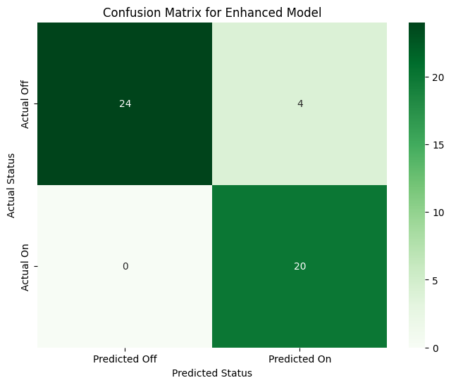
Unpacking the Success: Which Feature Was More Important?
Our enhanced model worked brilliantly, but which of our two new features did the model find more useful? For a logistic regression model, we can inspect the model coefficients. These numbers tell us how the model “weighs” each feature when making a decision. A larger coefficient (either positive or negative) means the feature has a stronger influence on the outcome.
Code
# Get the coefficients from the trained Logistic Regression model# The model stores them in the .coef_ attribute. Since it's a binary classifier, we take the first (and only) row.coefficients = classification_model_enhanced.coef_[0]feature_names = ['SWIR Anomaly', 'NO₂ Concentration']# Create a pandas series for easy plotting. We use the absolute value for magnitude.feature_importance_df = pd.Series(abs(coefficients), index=feature_names).sort_values(ascending=False)# Plottingplt.figure(figsize=(10, 6))sns.barplot(x=feature_importance_df.values, y=feature_importance_df.index, palette='viridis')plt.title('Feature Influence (Coefficient Magnitude) for On/Off Classification Model')plt.xlabel('Coefficient (Absolute Value)')plt.ylabel('Feature')plt.grid(axis='x', linestyle='--', alpha=0.7)# Add annotations to the barsfor index, value inenumerate(feature_importance_df): plt.text(value, index, f' {value:.3f}', va='center')plt.show()# Print the actual coefficients to see the direction of the relationshipprint("Model Coefficients:")for name, coef inzip(feature_names, coefficients):print(f" {name}: {coef:.4f}")print("\nA positive coefficient means that an increase in that feature makes the model more likely to predict 'On'.")
/var/folders/lg/tqlb1wcn4nqgxx9bmgfhm3_r0000gn/T/ipykernel_12367/3706021534.py:11: FutureWarning:
Passing `palette` without assigning `hue` is deprecated and will be removed in v0.14.0. Assign the `y` variable to `hue` and set `legend=False` for the same effect.
sns.barplot(x=feature_importance_df.values, y=feature_importance_df.index, palette='viridis')
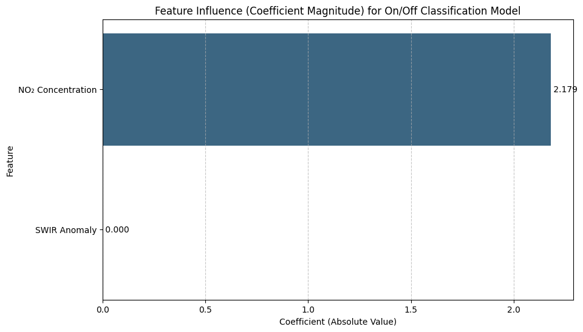
Model Coefficients:
SWIR Anomaly: 0.0000
NO₂ Concentration: -2.1792
A positive coefficient means that an increase in that feature makes the model more likely to predict 'On'.
The Challenge of Predicting Emission Quantity
Our feature engineering was a success for the classification task. We built a model that can confidently tell us if a power plant is “On” or “Off”. But can we push our success further? The final and most difficult challenge remains: can we predict the quantity of CO2 emissions?
For this, we will upgrade our modeling toolkit, using a RandomForestRegressor—a powerful model that can capture complex, non-linear patterns. We’ll train it on our high-quality features (swir_anomaly, no2_concentration) for the hours the plants were active.
However, our rigorous data cleaning and fusion process has left us with a small, high-quality dataset of just 20 “On” events. This presents a new, critical question: do we have enough data for a model to learn such a complex relationship? Let’s find out.
Code
# 1. Prepare the data# We use the same 'enhanced_model_df', but only for records where the plant was ON.reg_df_enhanced = enhanced_model_df[enhanced_model_df['on_off_status'] ==1].copy()print(f"Using {len(reg_df_enhanced)} 'On' records for the enhanced regression model.")# 2. Define features (X) and target (y)X = reg_df_enhanced[['swir_anomaly', 'no2_concentration']]y = reg_df_enhanced['CO2 Mass (short tons)']# 3. Split data into training and testing sets (80% train, 20% test)X_train, X_test, y_train, y_test = train_test_split(X, y, test_size=0.2, random_state=42)# 4. Initialize and train the RandomForestRegressor model# n_estimators is the number of trees in the forest.rf_model = RandomForestRegressor(n_estimators=100, random_state=42, oob_score=True)rf_model.fit(X_train, y_train)# 5. Make predictions on the unseen test datay_pred = rf_model.predict(X_test)# 6. Evaluate the model's performancer2 = r2_score(y_test, y_pred)mae = mean_absolute_error(y_test, y_pred)print(f"\n--- Enhanced Regression Model Results ---")print(f"R-squared (R²): {r2:.2f}")print(f"Mean Absolute Error (MAE): {mae:.2f} short tons")print(f"Out-of-Bag Score (OOB): {rf_model.oob_score_:.2f}")# 7. Visualize the results: Actual vs. Predictedplt.figure(figsize=(10, 8))plt.scatter(y_test, y_pred, alpha=0.7, edgecolors='k')plt.plot([y.min(), y.max()], [y.min(), y.max()], 'r--', lw=2) # y=x lineplt.title('Actual vs. Predicted CO2 Emissions (Enhanced Model)')plt.xlabel('Actual Emissions (short tons)')plt.ylabel('Predicted Emissions (short tons)')plt.grid(True)plt.show()
Using 20 'On' records for the enhanced regression model.
--- Enhanced Regression Model Results ---
R-squared (R²): -0.63
Mean Absolute Error (MAE): 135.17 short tons
Out-of-Bag Score (OOB): -0.14
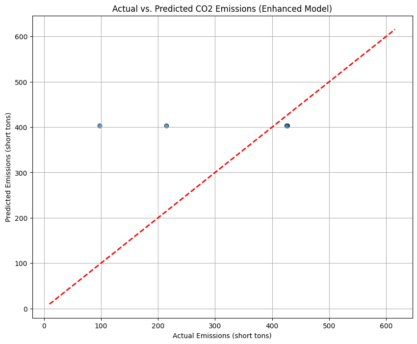
The Final Insight: Why Predicting Quantity is So Difficult
Our final regression model struggled, even with our improved features. Why? The missing piece is the plant’s hourly operational load. A plant that is “On” is not always running at 100% capacity. Its output fluctuates based on energy demand.
This final plot shows the direct relationship between the power generated each hour (Gross Load) and the CO2 emitted. We can see a clear linear trend, but also significant variance. Our satellite features are good at detecting the “On/Off” signal, but capturing this precise, fluctuating load from space is the true frontier—a challenge that requires even more sophisticated data.
Code
# Use the same dataframe from our successful regression attempt# This contains only 'On' records with valid emissions dataon_records_df = enhanced_model_df[enhanced_model_df['on_off_status'] ==1].copy()plt.figure(figsize=(12, 7))sns.regplot( data=on_records_df, x='Gross Load (MW)', y='CO2 Mass (short tons)', scatter_kws={'alpha': 0.5}, line_kws={'color': 'red', 'linestyle': '--'})plt.title('Power Output vs. CO2 Emissions for "On" Plants')plt.xlabel('Gross Load (MW)')plt.ylabel('CO2 Mass (short tons)')plt.grid(True)plt.show()
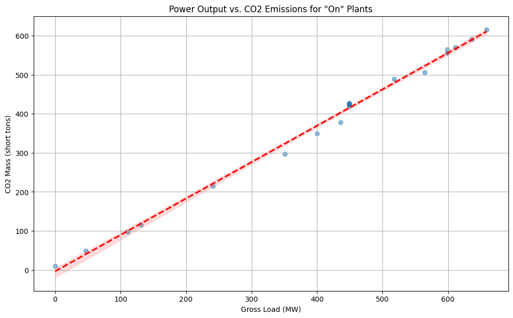
Conclusion
The feature importance chart tells the entire story in a single image: the direct measurement of NO₂ pollution was overwhelmingly the most important feature, so much so that the model learned to completely ignore the more subtle thermal-infrared signal.
By incorporating data from a satellite specifically designed to monitor air quality (Sentinel-5P), we gave our model a direct, unambiguous signal of industrial activity.
The success of the classification model, driven by this single powerful feature, and the informative struggle of the regression model, constrained by a lack of data, provide our key takeaways:
Go to the Source: When possible, use data that measures your target phenomenon as directly as possible. For monitoring pollution, a chemical trace from an air-quality satellite proved far more effective than an indirect heat signature.
Feature Engineering is About Signal, Not Just Cleverness: Our “SWIR anomaly” was a good idea, but the NO₂ data provided a much cleaner signal. The best feature isn’t the most complex; it’s the one with the least noise.